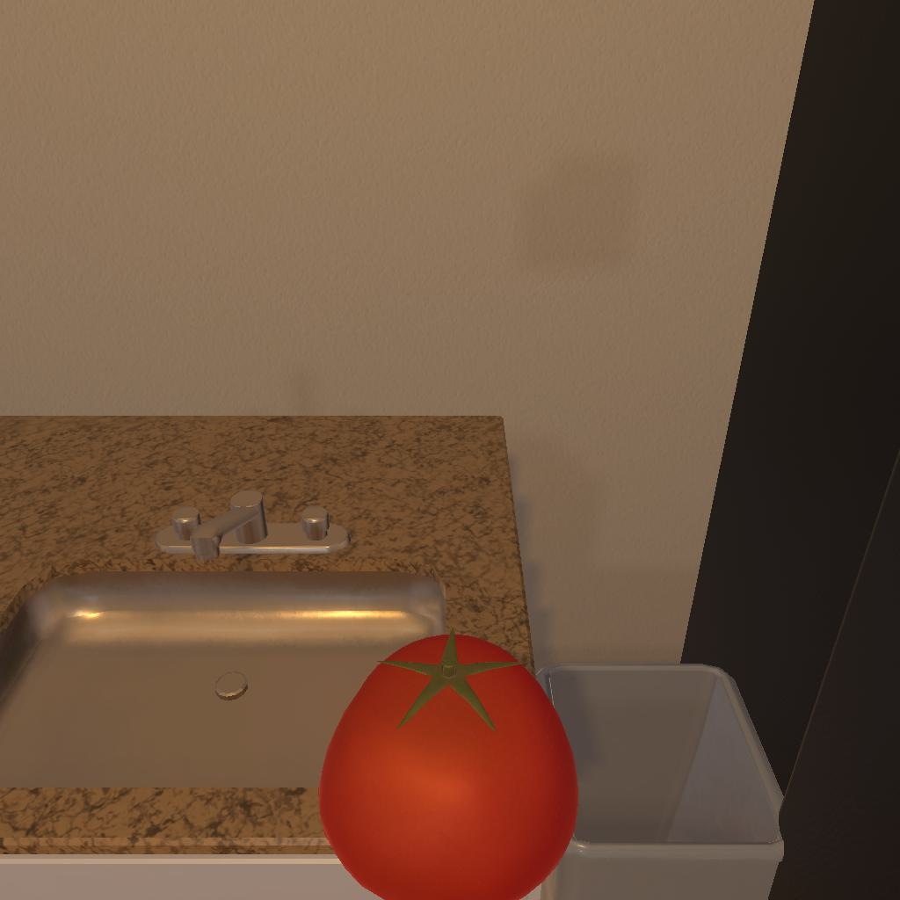

---------------------------------------------------------task: 13---------------------------------------------------------
--------------------------------------------------------------------------------------------------------------------------------------------------------------------
--------------------------------------------------------------------------------------------------------------------------------------------------------------------
Step:--------------------------------------------------------------------------13-------------------------------------------------------------------------------
----------------------------------------
VLM Prompt:
Image1:
Image2:
**Instruction**
1. Analyze the provided images to identify all visible household objects and compare the difference between images (e.h. whether the object is opened or not and taken on hand or not), focusing on those relevant to the task description "clean some tomato and put it in garbagecan."
2. Use the analysis of images and the task hint "The agent must find an object of the desired type, pick it up, go to a sink or a basin, clean the object with a sink or basin, and then find the correct location to place it and put it down there. The agent does not need to use soap bottle or faucet to clean the object, and the agent just needs to do action that is "clean the object with the sink or sink basin"." to answer the question: what is the most reasonable action in the choices for the task description "clean some tomato and put it in garbagecan"?
3. Decide and write the answer using the template: The answer is: (i): , where i is the real number. If there is no desired object in images, search every place based on **Initial Observation** to find the object. And if no one is exactly correct, choose a similar answer.
**Initial Observation**
You are in the middle of a room. Looking quickly around you, you can see countertop (1-2), cabinet (1-11), garbagecan (1), toaster (1), sinkbasin (1), fridge (1), sink (1), microwave (1), drawer (1-3), stoveburner (1-4), coffeemachine (1), diningtable (1)
**Answer Choices**
(1): go to countertop 1
(2): go to cabinet 1
(3): go to cabinet 2
(4): go to cabinet 3
(5): go to cabinet 4
(6): go to toaster 1
(7): go to sinkbasin 1
(8): go to fridge 1
(9): go to sink 1
(10): go to cabinet 5
(11): go to microwave 1
(12): go to countertop 2
(13): go to cabinet 6
(14): go to cabinet 7
(15): go to drawer 1
(16): go to stoveburner 1
(17): go to stoveburner 2
(18): go to cabinet 8
(19): go to drawer 2
(20): go to stoveburner 3
(21): go to stoveburner 4
(22): go to coffeemachine 1
(23): go to cabinet 9
(24): go to cabinet 10
(25): go to cabinet 11
(26): go to diningtable 1
(27): go to drawer 3
(28): put tomato 1 in/on garbagecan 1
(29): examine tomato 1
(30): examine garbagecan 1
**Answer**
Let's think step by step by following the instructions.
----------------------------------------
----------------------------------------
Original Response:
Image Analysis:
- Both images show a tomato on the edge of a sink basin with a garbage can nearby.
- The tomato appears to be the same in both images, and there is no visible difference in the object's status (e.g., not opened, not taken in hand).
Task Description Analysis:
- The task is to clean a tomato and then put it in the garbage can.
From the initial observation, we know there is a sinkbasin (1) and a garbagecan (1) in the room. The images show the tomato near the sink basin, so it's reasonable to assume that the tomato has been placed there for cleaning.
Given the task description and the analysis of the images, the most reasonable action to perform next would be to "clean the tomato with the sink or sink basin" and then "put the tomato in the garbage can."
The answer is: (28): put tomato 1 in/on garbagecan 1.
----------------------------------------
----------------------------------------
>>> Refine Original VLM Response and Get Pure Action: put tomato 1 in/on garbagecan 1
----------------------------------------
-----------------------------------------------------------------
Running time: 11.242962121963501 seconds
Total Money: 6.172030000000003
-----------------------------------------------------------------
-----------------------------------------------------------------
Text Observation:You put the tomato 1 in/on the garbagecan 1.
-----------------------------------------------------------------
SUCCEED